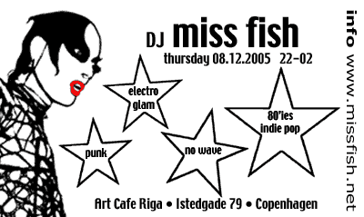

| dunst | Nyhedsbrev |
| København - 7. December 2005 | |
| dunst recommends this event | Torsdag 8. December 2005 |
 |
|
| Miss Fish er DJ på Riga | |

| digt af Hairwerk |
|
Ding dang kæmpe pik. Sagde hullet i
et flip. Tina uden trusser er som hairwerk på for mange sjusser. Jeg bære en citron box af vane løs idé mens du gør dit hos dem imens jeg gør dat hos da og vi alle synger i kor til den endeløse ligegyldighed. Hugo hug in ingav k.m hell impl smil dk.ve rugb få hen oly ikr fili tilgå smil hk.ae .sid gå jobmd. |
| dunst - CALENDAR |  See what, when and where we are partying in the
dunst - CALENDAR See what, when and where we are partying in the
dunst - CALENDAROr tjek the dunst calendar with your mobile phone at mobil.dunst.dk help |
Hvis du vil leve et kedeligt liv uden dunst så afmeld dunst Nyhedsbrev på forsiden af www.dunst.dk